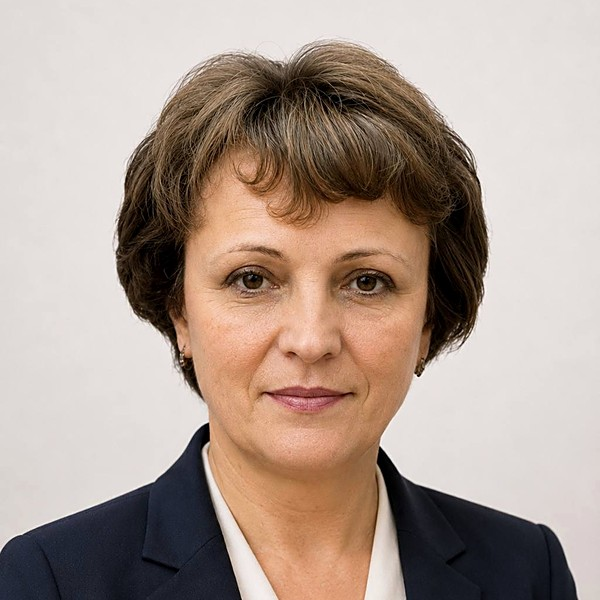
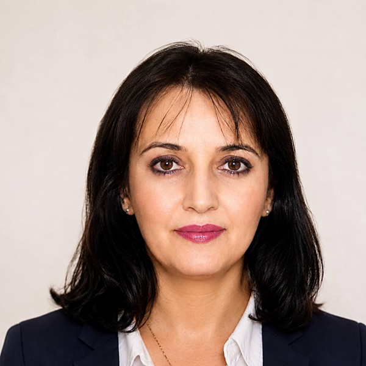
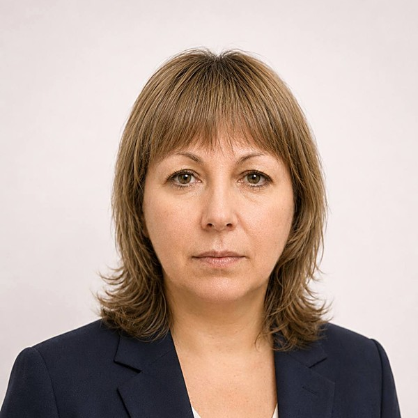

Главная — Команда
Люди и практика
За каждым заключением стоят люди. Аттестованные аудиторы с дипломами ACCA по международной отчётности, налоговые консультанты и специалисты по МСФО — костяк команды работает в компании со дня основания.
Команда
Аттестованные аудиторы со стажем 10–30 лет, дипломы ACCA по международной отчётности, члены СРО аудиторов «Содружество». Многие работают в компании с момента основания.
Соучредитель группы и бессменный руководитель аудиторского и консультационного направления. Более 30 лет в финансах, налогах и аудите. Лично курирует сделки M&A, привлечение финансирования, due diligence и финансовые расследования по широкому спектру отраслей.
Более 20 лет в финансах, из них свыше 12 — в аудите. Руководит проверками компаний, ценные бумаги которых обращаются на бирже. Опыт: фармацевтика, лизинг, логистика, медиа, IT, налоговый аудит.
Более 10 лет в аудиторских и налоговых проектах. Опыт: производство (металлоупаковка, медтехника), медиа и рекламные группы, энергетика, агросектор, процедуры due diligence.
Один из самых востребованных аудиторов практики — десятки проектов ежегодно. Опыт: аудит целевого использования средств по стандартам США, проверки внутреннего контроля (SOX 404), российские дочки транснациональных групп, некоммерческие организации и фонды, услуги, торговля, due diligence.

Многолетний опыт руководства аудитом крупных предприятий в области НИОКР, строительства, оптовой торговли (в том числе медоборудованием) и производства. Участие в проверках ФГУП, разработка внутрифирменных стандартов аудита.
Более 10 лет в аудите. Опыт: финансовые расследования и экспертиза, оценка показателя EBITDA, налоговый аудит филиалов транснациональных компаний, целевое использование средств НКО, агросектор, медтехника.

Более 15 лет в экономике, финансах и аудите. Опыт: проверки дочерних компаний крупной транспортной группы, медиа и телерадиовещание, инженерные и консалтинговые услуги для нефтедобычи, угольная промышленность.

Более 15 лет главным бухгалтером и свыше 10 лет в аудите. Опыт: производство и поставки медоборудования, торговые сети и ритейл, инвестиционные, лизинговые и факторинговые компании, налоговый аудит.
аудиторских заключений ежегодно по РСБУ и МСФО
отраслей в постоянной работе — от фармы до электрогенерации
дипломы DipIFR по международной отчётности у большинства аудиторов
все аудиторы — действующие члены СРО аудиторов «Содружество»
Наша практика
Несколько обезличенных задач, которые мы решали для клиентов из разных отраслей.
Независимый обзор состояния учёта и оценка налоговых и коммерческих рисков по итогам работы прежнего менеджмента теплогенерирующей компании.
Комплексная оценка перспектив масштабирования бизнес-модели такси-компании в регионы для привлечения инвестиций.
Сопровождение по вопросам КИК и легализации иностранной компании, анализ налоговых последствий.
Оценка эффективности использования рабочего времени персонала компании ежедневной доставки в торговые сети.
Сопровождение лицензионных соглашений по использованию известных товарных знаков на потребительских товарах.
Подготовка полного пакета инвестиционных документов для привлечения финансирования от иностранного фонда.
Расскажите о задаче — соберём команду под ваш проект.